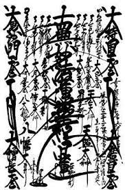

南無妙法蓮華經(受持的體驗)
|  | |
我姓朱名朝加，我來向各位報告，自從我受持以來的體驗，我是38歲那年承繼母親的衣缽，開始唱唸南無妙法蓮華經 ，身體及生活的一切都開始在轉好，不料我的業障深重，45歲那年得了肝硬化，一開始我覺得人容易疲勞，肌肉容易酸痛，我去豐原署立醫院，找肝膽胃腸科做檢查，才發現我得了肝硬化及糖尿病，醫師告訴我糖尿病可以用藥控制，但肝硬化無特效藥可治，只能做支持性的療法，延緩它的惡化，於是醫師開了胰島素和保肝給我，要我每三個月回來追蹤檢查，我回家之後開始向御本尊祈求，我每天早晚都有唱唸一柱香的題目，三個月一轉眼就過 了，我回去醫院檢查，醫生給我做完了檢查報告出來後，醫生告訴我說恭喜你沒有進一步的惡化，而且我的肝功能恢復了許多，繼續開藥給我，並要我每三個月繼續做追蹤檢查。 至今我64歲了，其間歷經了19年的歲月，我的肝依然沒有惡化，肝功能都維持正常，我可以向大家說我已經以題目戰勝了肝硬化，在此歲月之間 我在2014年開始坐骨神經痛，我內心自己知道我的罪業深重，我決定要以唱唸(南無妙法蓮華經)來消除我一切的病業，我下定決心每天用4個小時來唱題挑戰，並在工作中也不斷的唱題，我向御本尊祈求讓盡快消除疼痛，果然在經過拉腰復健一兩年之後我的坐骨神經痛消除了，於2018年，我在一次換工作的機會中，政府規定新進的員工都要做體檢，因而我在這次體檢中發現了早期肺癌，我到中國醫藥學院做肺葉切除手術，至今沒有再發，醫師告訴我每半年回去追蹤一次即可，我深深的相信只要受持(南無妙法蓮華經)一定能夠完全的消除病業，進而達到日蓮大聖人所說的一生成佛的目標。
若有意查證請來電:0917-937776